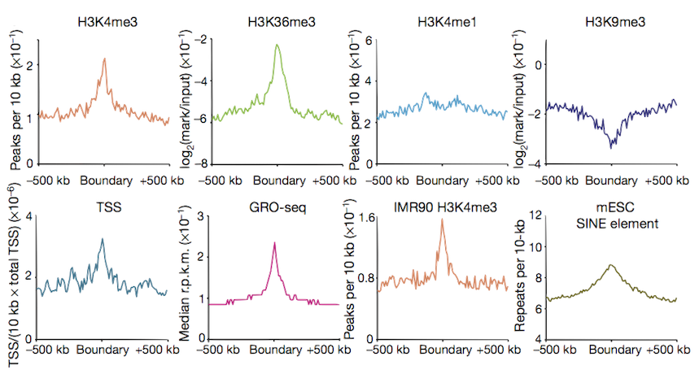
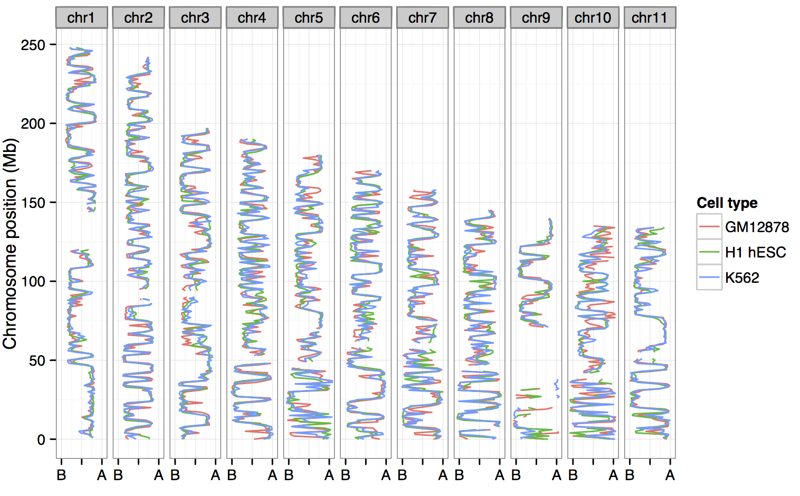

Introduction
Risca and Greenleaf (2015)
Ben Moore (@benjaminlmoore)
Research talk, April 22nd 2015
Slides online at: blm.io/talks/restalk
Risca and Greenleaf (2015)
What's higher order chromatin structure?
Lieberman Aiden et al. (2009)
Steensel and Dekker (2010)
Belton et al. (2012)
Figure from Yaffe and Tanay (2011)
Insights from Hi-C data

Left figure from Lieberman-Aiden et al. (2009)
Figure from Dixon et al. (2012)
Higher resolution structures called
"Topological associating domains"
TADs
~800 kb in size (compartments ~5 Mb)
Identified using directional contact bias
Highlighted regions as TAD boundaries

Figure from Dixon et al. (2012)
Our results
Get raw Hi-C reads (three pulications for different human cell lines)
Uniformly process interaction matrices and normalise with ICE (Imakaev et al., 2012)
Call compartments, TADs, boundaries — compare these across cell types
Investigate relationship with ENCODE ChIP-seq data: uniformly-processed signal (fold-change relative to input, from Boyle et al., 2014)


ChromHMM + SegWay consensus chromatin state predictions from ENCODE
Split into cell-type specific and shared (overlapping annotation in ≥ 2 cell types)
Enrichment for cell-type specific enhancers in flipped open regions in the two lineage-committed cell lines


Boundary profiles have previously been looked at for a handful of features,
we can do this with lots more...


Can compartments be predicted from ENCODE ChIP-seq data?
And if so:
• What are the most informative variables
• Do rules differ between cell types
• Can we call compartments when Hi-C data isn't available


H1 embryonic stem cells looks like an outlier…
…generally open, more permissive genome organisation than
the lineage-commited lines.
Open / closed compartments well-correlated with combinatorial patterns of histone mods + DNA binding proteins, enabling accurate predictive models
Cross-application shows common structural rules across human cell types
Still, variable importances reflect known biology (EGR1 in stem cells, H3k9me3 in K562)
CTCF and YY1 may combine to create organisational boundaries at multiple scales
Increased amounts of cell-type specific enhancers correlate with significant changes in chromatin architecture
Thanks for your attention
References:
Belton et al. (2012) Hi-C: a comprehensive technique to capture the conformation of genomes. Methods, 58, 268-76.
Boyle et al. (2014) Comparative analysis of regulatory information and circuits across distant species. Nature, 512, 435-6.
Dixon et al. (2012) Topological domains in mammalian genomes identified by analysis of chromatin interactions. Nature, 485, 376-80.
Imakaev et al. (2012) Iterative correction of Hi-C data reveals hallmarks of chromosome organization. Nature methods, 9, 999-1003.
Kalhor et al. (2011) Genome architectures revealed by tethered chromosome conformation capture and population-based modeling. Nature biotechnology, 30, 90-8.
Lieberman Aiden et al. (2009) Comprehensive Mapping of Long-Range Interactions Reveals Folding Principles of the Human Genome. Science, 326, 289-93.
Risca and Greenleaf (2015) Unraveling the 3D genome: genomics tools for multiscale exploration. Trends in Genetics, epub ahead of print.
Yaffe and Tanay (2011) Probabilistic modeling of Hi-C contact maps eliminates systematic biases to characterize global chromosomal architecture. Nature genetics, 43, 1059-65.
Code to reproduce all analyses is available at: github.com/blmoore/3dgenome.

Meeting 5pm today at 7 George Square!
Sponsored by: